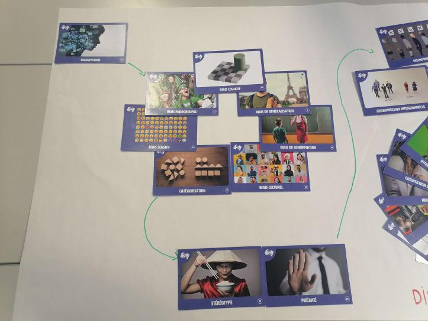
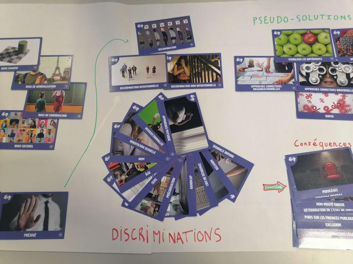
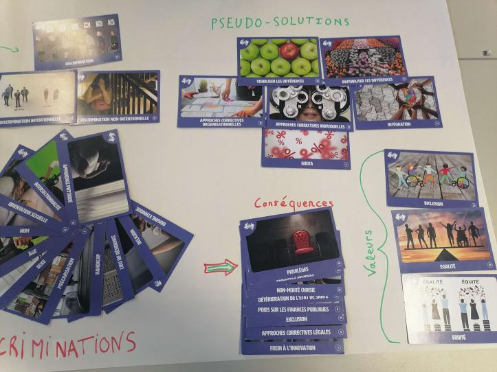

Engineering projects


To do so, their workshop facilitators host multiple activities with the public. It can take place at a company or at a school, and this is how I learnt about them.
During two weeks, we did a couple of activities, here are some of them:
1 - The sticker game
All the students got stuck to their forehead a colored sticker. Then we were given the direction to group ourselves WHITOUT TALKING THE EACH OTHER. In this case, only the other people could see my color and vice versa.
I remember trying my hardest to group people based on the color they had. And even if some students did not want to, the class ended up mostly splited between 5 groups for the 5 different colors.
But group people by their color was not the intended rule, the only one we were given was to group ourselves and it was at this moment that I felt a bit embarrassed. It was a very nice exercise to see that our primal instinct is to go closer to people we know while rejecting the others.
2- The number game
For this game, the teacher reads a little story for about a minute then asked us the rate it from 1 to 100 based on statistics regarding the question.
For example she talked about a person with an African name struggling to find an apartment. And the question was, how much harder is for foreigners to find an apartment in France from 0 to 100%. It was the best game of them all in my opinion because we could actually see how much we are advantaged or disadvantaged based on the situation. For example I remember that women have a significzntive less chance to be accepted during a job interview if the interviewer in a man.
In the end, it was a really interesting game, and it made me sigh from time to time.
3- The I do/don't game
In this game, the students were lined up next to each other with their eyes closed. The teacher then explains a situation, for exemple "I have already felt discriminated based on the color of my skin". If the student relates to this situation, he takes a step forward, if not he just doesn't move.
Even if the situations were interesting on their own, the fact that we cannot talk about it with the other students after the "take a step" part cut the interest in the game.
4- The climate fresk
By groups of 5/6, we were given a lot of paper squares with their own theme on it and a little description of it for a total of around 40 papers.
The goal was, on a big sheet of paper, to place this theme in a way to give them more senses, and try to understand what can lead to others.
Here you can find the fresk of my group with some explanations.

In our minds, everything starts with the way we acquire the information from all around us. This ultimately leads to have some bias that can be either bad or good. But some of them are very dangerous such as the cultural bias that can be transformed in stereotypes or preconceptions.

These very bad habits are then responsible of very toxic behaviors such as discrimination based on anything. Could be the name, the sex, disabilities......
And people subjected to this can develop very bad reactions to their situation, these are the consequences. It could be exclusion, deterioration of the health or less privileges.

We then identified what we called pseudo-solution that can be good on paper, but not this much when you really think about it. Quota or the invisibilization of the differences...
In the end, we did not find a "solution" to all of this, but we grouped what we think are the best values to cherish: the inclusion, the equality and the equity.